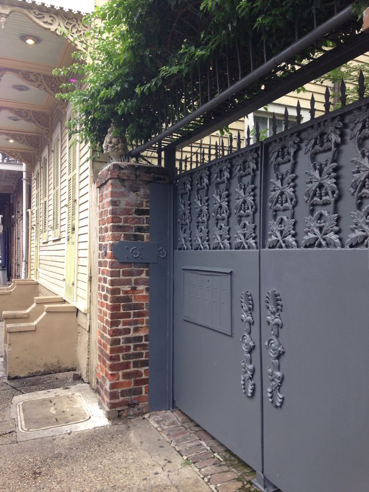

What we do
Our Services
From a single feature wall to a full exterior repaint — we handle every brush stroke with care, quality materials, and a tidy finish you'll love.
 Interior
Interior
Interior Painting
Transform your living spaces with a fresh, flawless finish. Whether you want a subtle neutral throughout or a bold feature wall, we'll help you choose the right colours and apply them with precision — clean lines, smooth coverage, no mess left behind.
- check_circle Living rooms, bedrooms & hallways
- check_circle Ceilings & coving
- check_circle Full prep: filling, sanding & priming
- check_circle Premium emulsion brands available
 Exterior
Exterior
Exterior Painting
Protect your property from the elements while giving it serious kerb appeal. We use weather-resistant, breathable masonry paints that stand up to the British climate — applied properly so they last for years, not months.
- check_circle Render, brick & pebbledash
- check_circle Fascias, soffits & bargeboards
- check_circle Surface prep included
- check_circle Weather-resistant top coats
 Windows
Windows
Windows Painting
Peeling or discoloured window frames can drag down the whole look of a property. We sand back, prime and repaint timber and UPVC-compatible frames with a hard-wearing gloss or satin finish that stays looking sharp season after season.
- check_circle Timber & UPVC-compatible paints
- check_circle Full sand-back & prime before topcoat
- check_circle Gloss or satin finish options
- check_circle Interior & exterior frames
 Woodwork
Woodwork
Woodwork Painting
Skirting boards, door frames, banisters, dado rails — woodwork is the detail that makes a room feel finished. We take the time to sand, fill any gaps, prime and apply a smooth, even coat that looks crisp and professional.
- check_circle Skirting boards & architraves
- check_circle Doors, banisters & dado rails
- check_circle Gap filling & caulking included
- check_circle Durable gloss, satin or eggshell

MetalMetal Gates & Railings Painting
Rusting or flaking metal gates are both an eyesore and a safety concern. We treat, prime and repaint iron and steel gates with specialist metal paint — giving you a smooth, rust-resistant finish that protects your gate for years to come.
- check_circle Rust treatment & removal
- check_circle Metal primer before topcoat
- check_circle Railings, fences & garden gates
- check_circle Long-lasting weatherproof finish
Not sure what you need?
Get in touch and we'll talk through your project and give you a clear, honest quote.